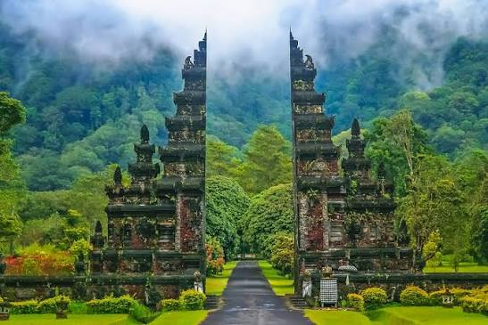
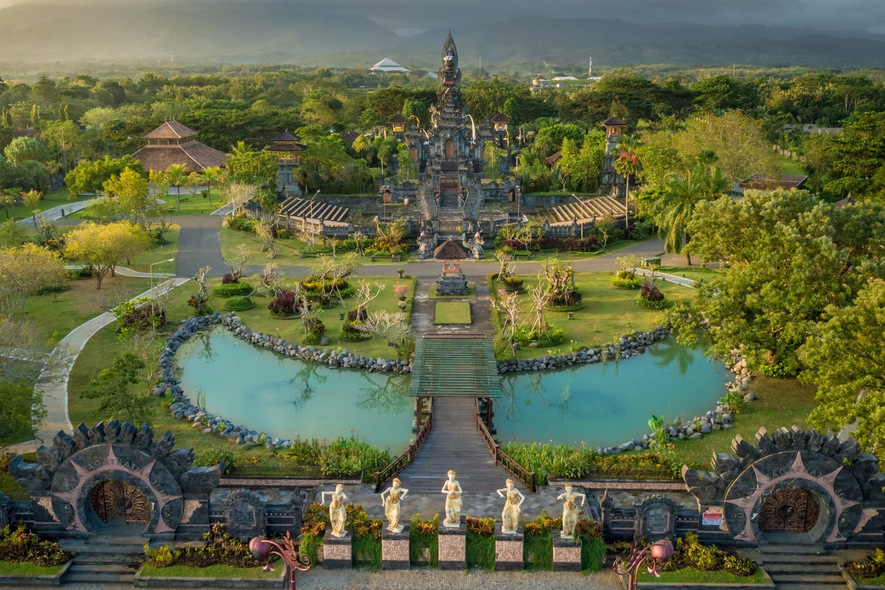
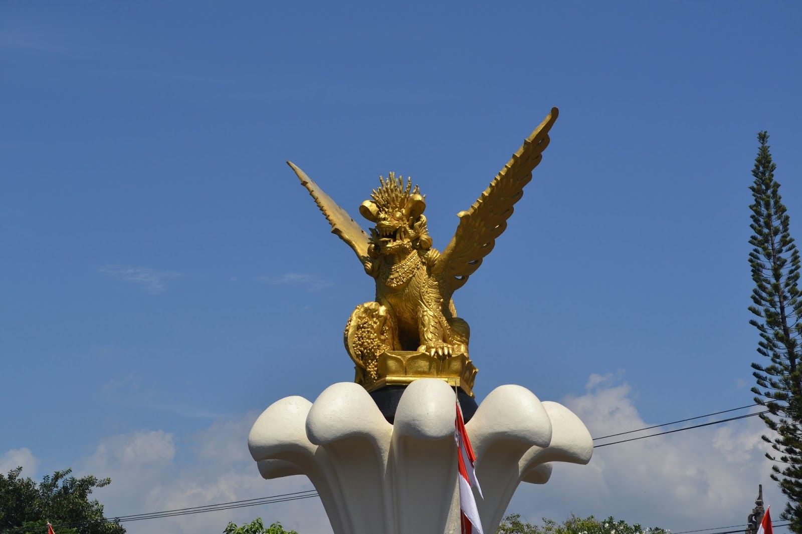
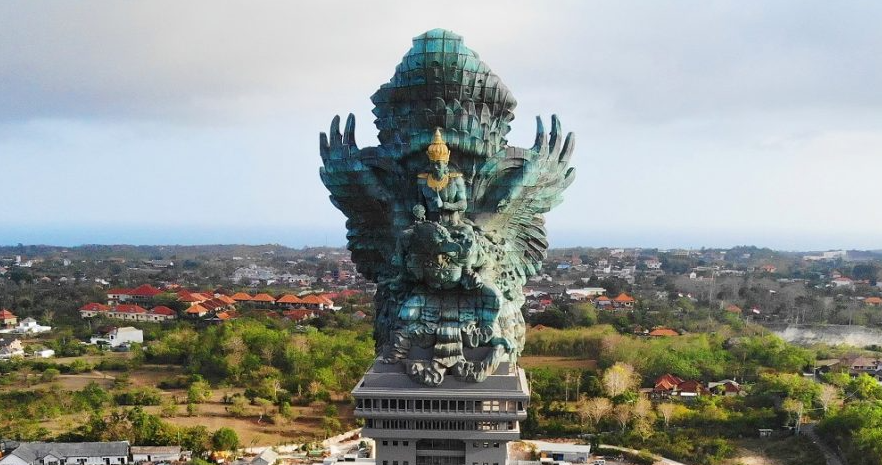
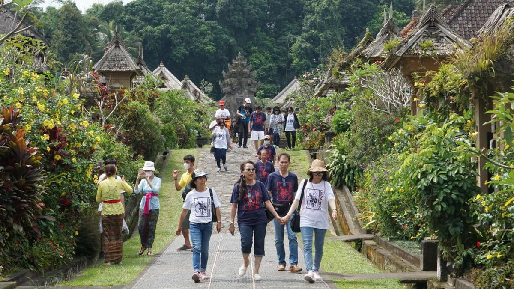
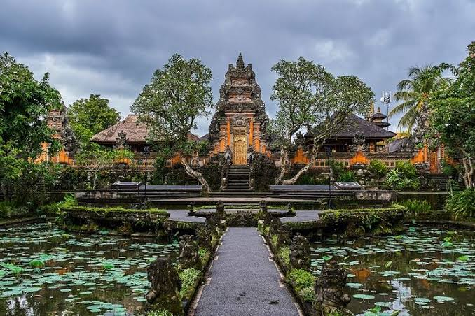
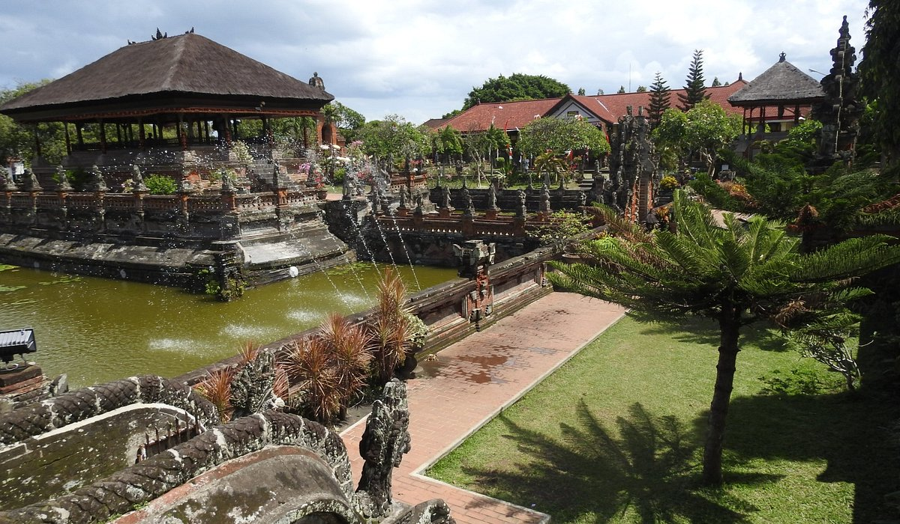
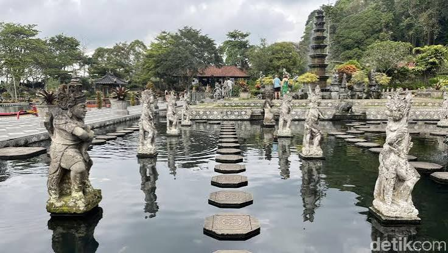
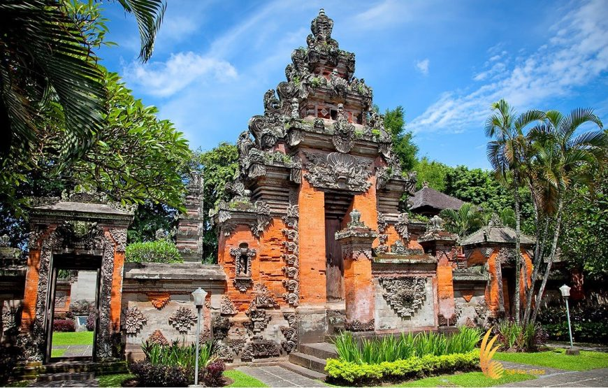

Bali adalah salah satu provinsi di Indonesia yang terkenal karena keindahan alam dan kekayaan budayanya. Bali sering disebut sebagai Pulau Dewata dan menjadi salah satu tujuan wisata terkenal di dunia.
Selain pantai dan pemandangannya yang indah, Bali memiliki berbagai tradisi yang masih dijaga oleh masyarakat hingga sekarang.
Kehidupan masyarakat Bali sangat erat dengan adat, seni, agama, keluarga, dan lingkungan.


Klik salah satu daerah pada peta untuk melihat informasi dan video!

Jembrana merupakan salah satu daerah di bagian barat Bali yang memiliki budaya dan tradisi khas. Kehidupan masyarakatnya tetap berkaitan erat dengan adat, seni, dan kegiatan masyarakat.
Berbagai kegiatan adat dan keagamaan menjadi bagian dari kehidupan masyarakat Bali. Tradisi juga diwariskan dari generasi ke generasi melalui keluarga dan kehidupan desa.
Seni musik, tari, pakaian tradisional, serta kegiatan bersama masyarakat menjadi bagian dari identitas budaya. Semangat gotong royong juga terlihat dalam persiapan kegiatan adat dan keagamaan.
▶ Tonton Video Jembrana
Buleleng terletak di bagian utara Pulau Bali dan memiliki kekayaan alam serta budaya yang beragam. Kehidupan masyarakatnya juga memperlihatkan perpaduan antara tradisi dan kehidupan modern.
Hubungan manusia dengan lingkungan merupakan salah satu nilai yang penting dalam kehidupan masyarakat Bali. Hal ini berkaitan dengan konsep Tri Hita Karana yang menekankan keharmonisan manusia dengan alam, sesama, dan Tuhan.
Berbagai upacara, pakaian adat, seni tari, musik tradisional, dan kegiatan keagamaan masih menjadi bagian dari kebudayaan Bali.
▶ Tonton Video Buleleng
Tabanan memiliki lingkungan alam dan kehidupan masyarakat yang erat dengan tradisi Bali. Hubungan antara masyarakat dan alam menjadi salah satu bagian penting dalam kehidupan sehari-hari.
Konsep Tri Hita Karana mengajarkan keharmonisan antara manusia dengan lingkungan. Nilai ini dapat terlihat dalam berbagai kegiatan masyarakat dan cara menjaga lingkungan.
Kegiatan adat dan keagamaan menjadi bagian dari kehidupan masyarakat. Tradisi seperti upacara keagamaan dan kegiatan desa membantu menjaga hubungan antaranggota masyarakat.
▶ Tonton Video Tabanan
Badung merupakan salah satu daerah Bali yang berkembang pesat dan memiliki berbagai kekayaan budaya serta kehidupan masyarakat. Budaya tradisional tetap dapat ditemukan berdampingan dengan perkembangan kehidupan modern.
Pura, upacara adat, pakaian tradisional, seni tari, musik, dan berbagai kegiatan masyarakat masih menjadi bagian dari kehidupan budaya Bali.
Perkembangan pariwisata membuat banyak orang mengenal Bali. Namun, tradisi Bali memiliki makna keagamaan dan sosial bagi masyarakat yang menjalankannya sehingga adat dan tempat suci perlu dihormati.
▶ Tonton Video Badung
Bangli memiliki kekayaan alam dan kehidupan masyarakat yang dekat dengan lingkungan. Kehidupan masyarakat Bali juga tidak terlepas dari adat, agama, dan kegiatan bersama.
Salah satu nilai penting dalam budaya Bali adalah Tri Hita Karana, yaitu hubungan manusia dengan Tuhan, sesama manusia, dan alam. Nilai tersebut dapat diterapkan dalam kehidupan sehari-hari.
Masyarakat bekerja sama dalam berbagai kegiatan sosial, adat, dan keagamaan. Kerja sama ini membantu tradisi tetap diwariskan kepada generasi berikutnya.
▶ Tonton Video Bangli
Gianyar dikenal sebagai salah satu daerah yang memiliki kekayaan seni dan kebudayaan Bali. Berbagai bentuk seni seperti ukiran, patung, lukisan, dan kerajinan menjadi bagian dari kehidupan budaya masyarakat.
Bali memiliki berbagai kerajinan tradisional seperti ukiran kayu, patung, lukisan, anyaman, dan benda seni lainnya. Daerah sekitar Mas dikenal dengan tradisi ukiran kayunya.
Beberapa kawasan di Ubud juga memiliki nilai budaya yang penting. Monyet ekor panjang dapat ditemukan di kawasan hutan yang juga dikenal sebagai salah satu tempat yang berkaitan dengan budaya.
▶ Tonton Video Gianyar
Klungkung merupakan salah satu daerah yang memiliki sejarah dan kekayaan budaya Bali. Seni, tradisi, arsitektur, dan kehidupan masyarakat menjadi bagian dari warisan budaya daerah.
Arsitektur Bali dapat dikenali melalui pura, gerbang, halaman, ukiran, dan penggunaan bahan alami. Salah satu bentuk gerbang yang terkenal adalah candi bentar, yaitu gerbang yang memiliki bentuk terbelah.
Warisan budaya tidak hanya berupa bangunan, tetapi juga berbagai tradisi dan kegiatan masyarakat yang terus diwariskan dari satu generasi ke generasi berikutnya.
▶ Tonton Video Klungkung
Karangasem memiliki berbagai kekayaan budaya, alam, dan tradisi masyarakat Bali. Tradisi tersebut diwariskan secara turun-temurun dan menjadi bagian dari kehidupan masyarakat.
Salah satu kain tradisional Bali yang terkenal adalah kain Gringsing dari Desa Tenganan. Kain ini dibuat menggunakan teknik ikat ganda yang rumit dan membutuhkan proses pembuatan yang panjang.
Kehidupan masyarakat Bali memiliki hubungan yang kuat dengan kegiatan keagamaan. Upacara seperti Melasti, Nyepi, dan Ngaben merupakan contoh tradisi yang memiliki makna penting dalam kehidupan masyarakat Hindu Bali.
▶ Tonton Video Karangasem
Denpasar merupakan ibu kota Provinsi Bali dan menjadi salah satu pusat kehidupan masyarakat Bali. Kehidupan modern berjalan berdampingan dengan budaya dan tradisi.
Di tengah perkembangan kota, berbagai unsur budaya seperti pakaian adat, upacara, pura, seni, dan bahasa Bali tetap menjadi bagian dari kehidupan masyarakat.
Selain Bahasa Indonesia, masyarakat Bali memiliki Bahasa Bali sebagai salah satu bahasa daerah. Bali juga memiliki Aksara Bali, yaitu sistem tulisan tradisional yang digunakan untuk menulis bahasa Bali dan berbagai teks tradisional.
Gamelan Bali digunakan untuk mengiringi tarian, upacara, dan berbagai pertunjukan. Permainan gamelan dikenal dengan ritme yang dinamis serta membutuhkan kerja sama antarpemain.
▶ Tonton Video Denpasar
Tarian merupakan bagian penting dari kebudayaan Bali. Gerakannya kuat dan ekspresif.

Pakaian adat Bali digunakan dalam berbagai kegiatan adat maupun keagamaan.

Endek dan Gringsing merupakan contoh kain tradisional khas Bali.

Ayam betutu, sate lilit, lawar, nasi campur Bali, dan babi guling merupakan makanan khas Bali.
Tri Hita Karana merupakan gagasan mengenai tiga hubungan yang mendukung keharmonisan kehidupan.
Hubungan manusia dengan Tuhan melalui kehidupan keagamaan.
Hubungan dengan sesama melalui kehidupan sosial dan kebersamaan.
Hubungan manusia dengan lingkungan dan alam.
Bali merupakan salah satu daerah di Indonesia yang memiliki kekayaan budaya dan tradisi yang sangat beragam. Keunikan tersebut dapat dilihat dari tarian, pakaian adat, kain tradisional, makanan, bahasa, arsitektur, musik, kerajinan, hingga berbagai upacara adat yang masih dijalankan hingga sekarang.
Budaya Bali mengandung nilai kebersamaan, penghormatan terhadap tradisi, kehidupan beragama, serta keharmonisan antara manusia, sesama, dan alam.